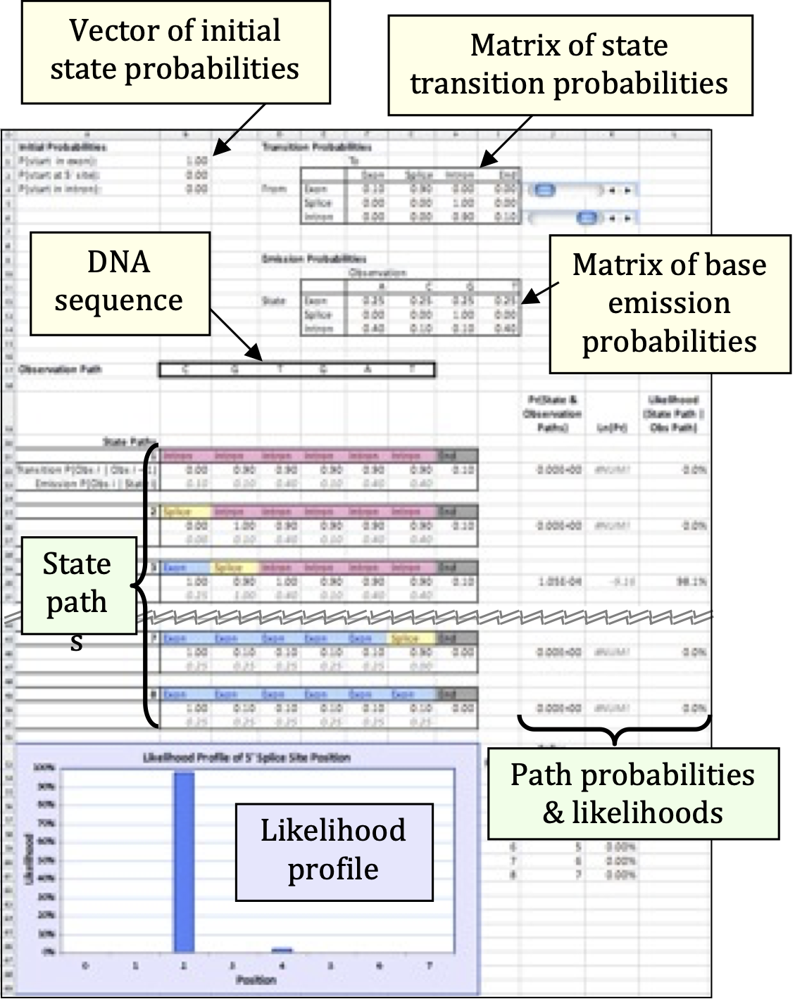
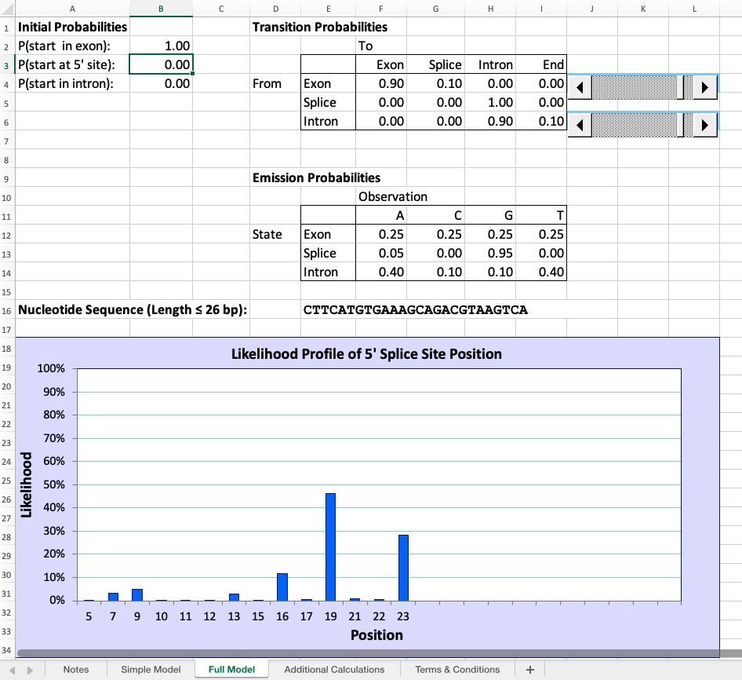

20 Lab06: HMMs in Predicting Gene Models
Hidden Markov models (HMMs) are a set of mathematical tools that can be used to draw inferences about genomic and evolutionary processes. In general, an HMM calculates the probability of each scenario that could have resulted in an observed data set, then uses statistical methods to determine which scenarios are most likely to have occurred. For example, HMMs can be applied to DNA sequence data from different species to infer the likely pattern of relationships among those species.
20.1 Learning Goals
- Students will understand the basic structure of an HMM, the types of data used in ab initio gene prediction, and its consequent limitations.
- Students will understand the process of gene exon-intron boundary prediction, having altered the values for the key parameters and noted the impact on the prediction.
- Students will consider how the exon-intron boundary model might be designed to be more accurate, thinking about the biological features of the process and how they might be represented in a computer program.
20.2 Learning Objectives
- Students will be able to process unannotated genomic data using ab initio gene finders as well as other inputs.
- Students will be able to defend the proposed gene annotation.
- Students will reflect on the other uses for HMMs.
20.3 Step-by-Step Instructions:
20.3.1 Part 1: Reviewing the basics
The first part of this lab activity reviews some of the concepts introduced in Chapter 9 on how HMMs work to predict a specific gene model based on a DNA sequence. Specifically, you will use the simple Hidden Markov Model introduced in Figure 9.1 to calculate the various transition and emmission probabilities of given State Paths. This approach is used to identify the most likely path, thus identifying the location of the transition from exon to 5’SS to intron, or gene model.
- On a separate sheet of paper, draw a state diagram for an HMM that will scan an un-annotated genome for genes with a start codon, a stop codon, exons, introns, a 5’ splice site and a 3’ splice site. Use Figure 9.1 as a guide.
- What are the “states” of the model that you have drawn?
- Using the simple state HMM you have drawn out, calculate the probability of EACH of the state paths listed in the table below given the observed DNA sequence shown in the top row.
To calculate the probability of each possible state path, multiply all of the transition and emission probabilities for each base in the sequence above given the state in each part of the path. Take the log of the product of all probabilities across all states in a path to obtain the log P (see Note 9.1).
| A | G | T | G | A | |||
|---|---|---|---|---|---|---|---|
| Path 1 | Start | E | E | E | 5 | I | End |
| Path 2 | Start | E | E | 5 | I | I | End |
| Path 3 | Start | E | 5 | I | I | I | End |
Which of the state paths below is the most likely one to annotate the DNA sequence at the top correctly?
Note that each state path has the 5’ splice site at a different position in the sequence. Which 5’ splice site is likely to be the correct one?
Given what you know about splice sites in eukaryotic genes, does anything in this model seem problematic?
- HMMs assume that each base is an independent observation. For instance, they assume that the probability of the ith base being in an intron does not affect whether the (i+1)th base is in an intron. Give an example of a genomic feature where this assumption does not hold. Explain your reasoning.
20.3.2 Part 2: Exploring an HMM
For the next part of the lab, we will use an excel spreadsheet provided by Anton Weisstein to explore properties of Hidden Markov Models. The Excel workbook “Hidden Markov Model” illustrates the mathematical workings of an HMM, using the example of locating the 5’ splice site within a DNA sequence (see Chapter 9 for more detail). By manipulating model parameters such as the average length and base composition of introns vs. exons, the user can study how such changes influence the model’s decisions about where the splice site is likeliest to occur. For ease of demonstration, the workbook begins by analyzing a very short sequence (6 bp) before re-creating Eddy’s full, 26-bp model1.
Download and open the excel file “HiddenMarkovModel.intron.xls”. Before changing any of the sliders on the spreadsheet, save a copy of the file under a different name.
The first sheet in the workbook, appropriately named “Simple Model”, demonstrates the calculations involved in building an HMM to determine the exact location of an exon/intron boundary. The user enters a short DNA sequence and sets model parameters. The workbook then uses these values to compute the likelihood of each potential 5’ splice site location.

- Cells B2–B4 contain the probabilities that the DNA sequence begins in different regions of a gene. In HMM parlance, these regions are described as states of the model.
- Cells F4–I6 give the probability per nucleotide of moving from one state to another. For example, if G4 = 0.60, then a nucleotide in the gene’s exon has a 60% chance of being followed by a nucleotide in the splice site. This model focuses only on 5’ splice sites, so states will always occur in the order Exon – Splice – Intron – End.
- Cells F12–I14 give the state-specific probability of producing, or emitting, a particular nucleotide. In the initial model, all four nucleotides are equally likely to occur in an exon, but introns are GC-poor. For the sake of simplicity, the splice site is considered to be only one nucleotide long: in the initial model, that nucleotide is always a guanine.
- Finally, Cells B17–G17 contain the nucleotide sequence to be analyzed.
Cells B21–L51 show the model’s calculations. For each potential state path, the model computes:
the probability that the DNA sequence starts in the appropriate state,
the probability of precisely following the state path, and
the probability of emitting the observed DNA sequence if the state path is followed.
For example, state path 1 (Cells B21–H21) posits that the first nucleotide, a cytosine, occurs in an intron. The initial model gives a 0% probability of starting in an intron (Cell B4), and a 10% frequency of cytosines within an intron (Cell G14), so these values are reported. The second nucleotide, a guanine, is also proposed to occur in an intron. The initial model therefore reports the 90% probability of remaining within an intron (Cell H6) and the 10% frequency of guanines within an intron (Cell H14). This process continues through all six nucleotides, then reports the 10% probability of transitioning from the last nucleotide’s state — an intron — to the end of the sequence (Cell I6).
HMMs assume that each nucleotide is independent of the others, much as the result of a coin flip does not depend on previous or future flips. This assumption of independence is biologically unrealistic, but it greatly simplifies the math: each nucleotide’s individual probabilities can be simply multiplied together to calculate the total probability of the overall sequence. For state path 1, this combined probability is reported in Cell J22. Unsurprisingly, given that one of the numbers being multiplied was zero, the resulting product is also zero, meaning that this state path is not consistent with the observed sequence. In fact, under the initial model, state paths 3 and 5 are the only ones possible, because only they correctly place the splice site at a G.
Computationally, it is faster to add numbers together than to multiply them. This can make a huge difference when running a large HMM that may contain many millions of state paths. For this reason, most HMMs calculate the combined probability of a state path not by multiplying the individual nucleotide probabilities, but by adding the logarithms of those probabilities, using the identity. The resulting log-probabilities are reported in Column K. Note that ln(0) is undefined, so state paths with probability zero yield an error message in this column.
If the model correctly includes all possible state paths, adding up all of the probabilities in Column J should give the total probability p of emitting the observed sequence. But by definition, that sequence has indeed been observed, so the individual state path probabilities should be calibrated to sum to one. (In much the same way, if I have prior knowledge that a poker player is holding either a flush or a full house, each of those two hands is much likelier than if I lacked such knowledge.) Each state path’s probability is therefore divided by the total probability p to compute the path’s likelihood given observed DNA sequence. The results are displayed in Column L (which does sum to 1) and graphed in the likelihood profile at the bottom of the worksheet.
Now that we have reviewed how this worksheet works, let’s perturb it to better understand WHY it works!
Use the first slider to change the transition probability from exon to splice site (top row). For each value (0.2, 0.4, 0.6), use the second slider to vary the transition probability from intron to intron (bottom row) across three different values (0.7, 0.9, 1.0). Record in the table below how these perturbations affect the likelihood profile of the 5’ splice site position (describe which position(s) show highest likelihood and approximate probability values from the bar graph at the bottom of the spreadsheet). Why do these changes have these effects?
Exon→Splice transition Intron→Intron transition Predicted splice position(s) Likelihood (%) Biological interpretation 0.2 0.7 0.2 0.9 0.2 1.0 0.4 0.7 0.4 0.9 0.4 1.0 0.6 0.7 0.6 0.9 0.6 1.0 When you are done, reset to the original 0.6 exon→splice and 0.9 intron→intron transition probabilities.
Now systematically vary the emission probabilities for the splice site state. Starting with the default model where G = 1.0 at the splice site, change the emission probabilities to make the splice site less specific. Record in the table below how reducing the G content at the splice site affects the model’s predictions. What does this tell you about the importance of strong splice site consensus sequences?
Splice site emission probabilities Predicted splice position(s) Max likelihood (approx.) Comments A=0.00, C=0.00, G=1.00, T=0.00 (default) Strong consensus A=0.05, C=0.00, G=0.95, T=0.00 A=0.10, C=0.00, G=0.90, T=0.00 A=0.10, C=0.10, G=0.70, T=0.10 A=0.25, C=0.25, G=0.25, T=0.25 No consensus When you are done, reset to the original splice site emission probabilities.
If your model predicts multiple positions in the sequence have the same likelihood to be a splice site, how could you use RNA-Seq data to identify the best splice site candidate?
Consider the notion that transition probabilities in an evidence-based gene prediction algorithm can be calculated based on the length of a genetic feature (exons, introns, etc). That is, transition probabilities are a function of average gene length. If an HMM were trained using the genome of an organism with many short genes and few long genes, would you expect this HMM to predict more long genes or more short genes on an un-annotated genome? Why?
20.3.3 Part 3: Model Perturbations
In this part of the lab, you will explore how modifications to the HMM affect its predictions. Choose at least one of the following explorations (items 1-4), document the changes you make, and record the resulting effects on the model’s splice site predictions. For each exploration you choose, you should test multiple parameter values to observe trends, not just a single change.
Change the observed DNA sequence. Alterations in GC richness and in the position of any G nucleotides may influence the likelihood of the 5’ splice site occurring at a specific position. Note that the sequence must consist only of standard DNA nucleotides (A, C, G, and T).
Suggestion: Try sequences with different numbers of G’s and/or different GC content (e.g., GC-rich vs. AT-rich).
Change the base emission probabilities for exon and/or intron states. Alterations in the base composition of exons vs. introns will affect the model’s inferences about the best splice site position. In particular, changing the emission probabilities so that exons and introns have similar base compositions will severely degrade the model’s ability to predict the splice site location with any degree of confidence.
Note that each position within a given gene region must be occupied by one of the four nucleotides, so each row of the emission probability matrix must sum to one. If this condition is violated, the offending row will be highlighted in red.
Suggestion: Try making introns more GC-rich or making exons and introns compositionally similar.
Change the state transition probabilities using the built-in scrollbars. Again, each row of the transition matrix must sum to one.
Note that the transition probability (p) for the exon state to the splice site state is the reciprocal of the average exon length. (This is because the mean of a geometric distribution is 1/p.) For example, if the transition probability for the exon-to-splice site state is 10%, then the average exon will be 10 bp long. Similarly, the intron-to-end transition probability is the reciprocal of the average intron length. Adjusting these parameters will therefore shift the most likely splice site position to earlier or later in the sequence. The model assumes that the splice site consists of a single nucleotide, so the probabilities in the middle row cannot be changed.
Suggestion: Experiment with different average exon and intron lengths by adjusting transition probabilities. What happens with very short vs. very long predicted gene features?
Change the vector of initial state probabilities. The original model assumes that the DNA sequence starts in an exon (100% probability in cell B2). However, the start of the DNA sequence could be part of an intron or even at the splice site itself. A better model should account for this possibility and assign non-zero initial probabilities to all three states.
Note that, by definition, the sequence must start in one of these three states and these initial probabilities must sum to one.
Suggestion: Try splitting the initial probability equally among all three states, or giving higher probability to intron starts.
For the exploration you choose to conduct document:
- The specific parameter(s) you changed and the values you tested
- The effect on the predicted splice site position(s)
- The effect on the likelihood values
- Your interpretation of why these changes had the observed effects
20.3.4 Part 4: Exploration of the Full Model
The second sheet of the “Hidden Markov Model” workbook contains an exact replica of the HMM described by Eddy (2004)1. This sheet can be reached using the navigation tabs at the bottom of the Excel workspace. Eddy’s HMM is designed to handle DNA sequences up to 26 bp in length; moreover, under the initial settings, the splice site can occur at either an A or a G, although the latter is far more likely.

Key differences from the Simple Model:
- Handles sequences up to 26 nucleotides instead of just 6
- The splice site can occur at either an A or a G (though G is far more likely)
- You can paste sequences directly into Cell E16 rather than entering individual nucleotides
- The likelihood profile shows more nuanced predictions across a longer sequence
- Additional calculations are available in separate worksheets for those interested in the mathematical details
This sheet’s controls work similarly to the Simple Model. The interface is streamlined to focus on the model’s controls and output graph. If you want to examine the detailed calculations, scroll down to Rows 44–183 or navigate to the “Additional Calculations” sheet.
Exploratory Activity: Choose ONE exploration from the options below. Test multiple parameter values or sequences to observe trends and patterns. Document what you changed, what happened, and your interpretation of the results.
20.3.4.1 Option 1: Base Composition Effects
Investigate how the compositional difference between exons and introns affects splice site prediction. Start with the default settings where exons have equal base frequencies (25% each) and introns are AT-rich (A=40%, T=40%, G=10%, C=10%).
Systematically change the emission probabilities to make introns less AT-rich (more similar to exons). Test at least 3-4 different scenarios ranging from strong contrast to no contrast. For each scenario, record which position is predicted as the splice site and the maximum likelihood value.
Key questions to explore: How much compositional difference is needed for confident predictions? What happens when exons and introns have identical base composition?
20.3.4.2 Option 2: Sequence Variation
Test how different DNA sequences are interpreted by the model while keeping all parameters constant. Generate or find at least 3-4 different 26 bp sequences with varying characteristics (GC-rich, AT-rich, multiple G’s in different positions, random sequences, or real genomic sequences).
For each sequence, note its GC content, where G nucleotides are located, and where the model predicts the splice site.
Key questions to explore: Does the model always pick the first G? What happens with closely spaced G’s? How important is the position of G nucleotides versus overall sequence composition?
20.3.4.3 Option 3: Species-Specific Gene Architecture
Research typical exon and intron lengths for a specific organism (budding yeast, fruit fly, human, arabidopsis, or another of your choice). Use online databases like NCBI Gene, Ensembl, or model organism databases to find this information for several genes.
Calculate average lengths and convert them to transition probabilities using the formula: self-transition probability ≈ (average length - 1) / (average length). Enter these organism-specific values into the model and observe how predictions change.
Key questions to explore: How do your organism’s gene architecture parameters differ from the defaults? What would happen if you used a yeast-trained HMM to predict human genes, or vice versa?
20.3.4.4 Option 4: Statistical Power Analysis
Explore the relationship between base composition difference and prediction confidence. Create a series of tests where you systematically vary the AT content difference between exons and introns (e.g., 30%, 20%, 10%, 5%, 0% difference).
For each level of difference, record the maximum likelihood value from the profile. You might create a simple graph (by hand or in Excel) showing how prediction confidence changes as compositional difference decreases.
Key questions to explore: At what compositional difference does prediction confidence drop below 50%? Is there a threshold where the model essentially “gives up” and spreads probability across many positions?
For your chosen exploration, document:
- Which option you selected and why
- Specific parameters or sequences you tested (at least 3-4 different conditions)
- What happened in each test (predicted positions and approximate likelihoods)
- Patterns or trends you observed
- Your interpretation: Why did the model behave this way?
20.4 Reflection Questions
Now that you’ve completed the lab, reflect on the following questions. Your answers should demonstrate understanding of HMM principles and their application to gene prediction.
Parameter sensitivity: Based on your systematic explorations in Part 2 (transition probabilities and emission probabilities), which type of parameter seems to have the strongest effect on splice site prediction accuracy? Explain your reasoning using specific examples from your completed tables. How does this relate to the way real gene prediction software is trained?
Model complexity trade-offs: The toy model in this lab uses just three states (Exon, Splice, Intron) and models the splice site as a single nucleotide with strong G preference. Real gene finders like AUGUSTUS use dozens of states and model splice sites with position-specific weight matrices spanning multiple nucleotides. What are the advantages and disadvantages of increasing model complexity? Consider factors like:
- Prediction accuracy
- Amount of training data required
- Computational cost
- Risk of overfitting
- Interpretability
Integration with other data: In question 6 of Part 2, you considered how RNA-Seq data could help resolve ambiguous splice site predictions. Describe in detail how you would integrate RNA-Seq evidence with HMM-based predictions. What would you look for in the RNA-Seq data? How would you handle cases where they disagree?
Simple versus Full Model: Compare your experience working with the Simple Model (6 bp, Part 2) versus the Full Model (26 bp, Part 4). What additional insights did the longer sequence provide? What made the Full Model more challenging or interesting to work with? How does the increased sequence length affect the clarity of predictions?
Beyond gene prediction: HMMs are used throughout bioinformatics for diverse applications including protein domain identification (profile HMMs), sequence alignment (pair HMMs), and ancestry inference (as discussed in Chapter 9). Choose one application of HMMs from the chapter that is NOT gene prediction and explain:
- What are the “states” in that application?
- What are the “observations” (emissions)?
- Why is an HMM appropriate for that problem?
- How is it similar to or different from the gene prediction HMM you worked with in this lab?
20.5 Deliverables
Upload the following to Canvas:
- Part 1 (can be photo/scan of handwritten work or typed):
- Your hand-drawn state diagram for a complete gene (with start codon, stop codon, exons, introns, 5’ SS, and 3’ SS)
- Calculations for the three state paths (showing your work for at least one path in detail)
- Answers to the follow-up questions about which path is most likely and what seems problematic
- Part 2 Completed Tables:
- Completed table from question 4 (transition probability perturbations) with all cells filled in
- Completed table from question 5 (emission probability perturbations) with all cells filled in
- Brief description of the key patterns you observed across these systematic perturbations (2-3 sentences)
- Part 2 Short Answer Questions:
- Answers to questions 3, 6, and 7 from Part 2
- Part 3 Exploration Summary (2-3 sentences):
- For your chosen exploration of the simple model:
- Description of parameter changes you made (be specific about values)
- Table or organized list of results showing how predictions changed
- Interpretation of findings (why did the model behave this way?)
- Include screenshots or sketches if they help illustrate your results
- For your chosen exploration of the simple model:
- Part 4 Exploration Summary (1 paragraph, ~150-250 words):
- State which exploration option you chose
- Briefly describe what you tested
- Summarize your key findings
- Include one insight about what this taught you regarding HMM-based gene prediction
- Reflection Questions: Answers to all five reflection questions above (in a Word document or PDF).
Congratulations! The goal of this lab is to give you real-world experience with an HMM and to help you understand what properties lead to variation across software tools in gene model predictions.
20.6 Acknowledgement
This lab exercise was adapted from one written by Dr. Anton Weisstein from Truman State University and Zane Goodwin from Washington University in St. Louis in 20132.